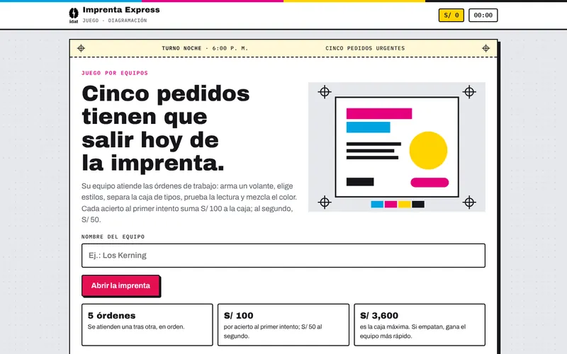
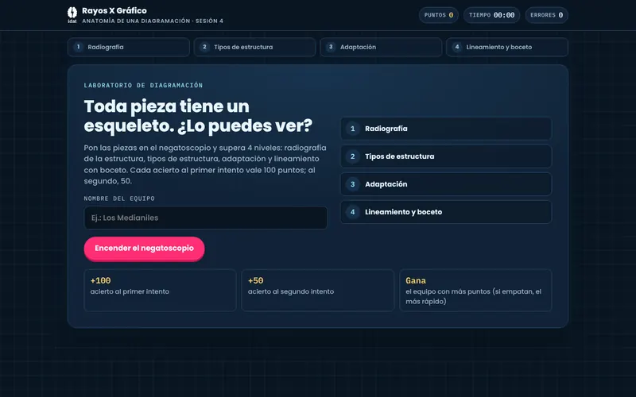
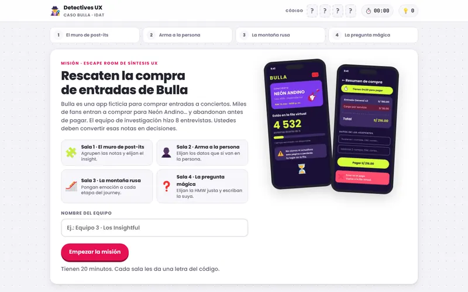
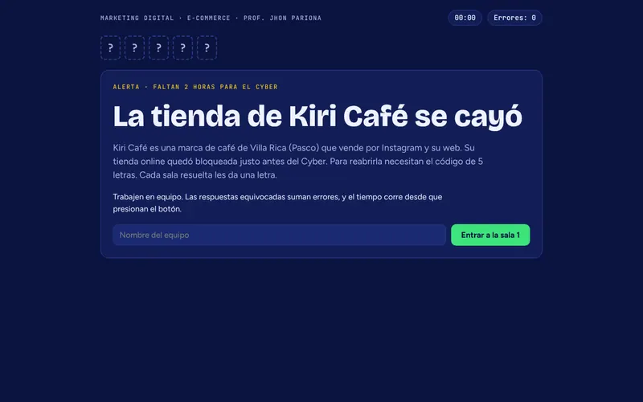
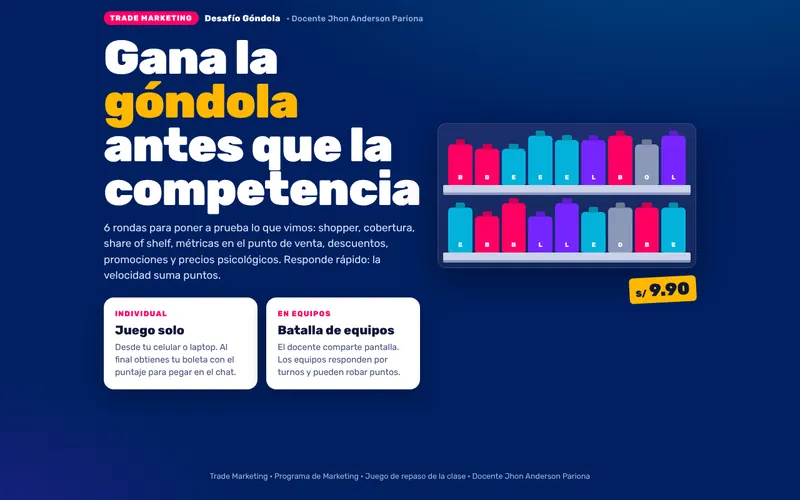
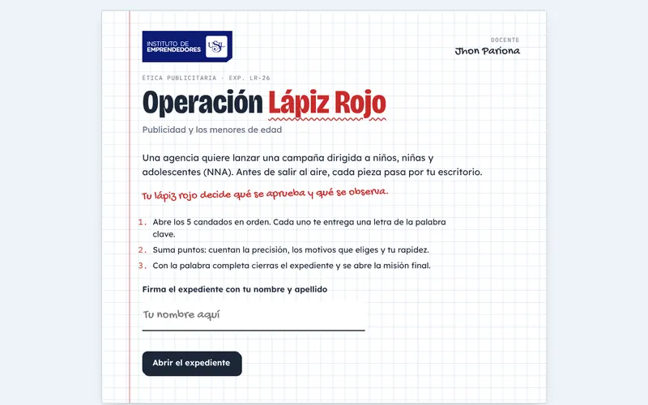

Docencia
Misiones de clase.
Juegos y escape rooms que uso en mis clases para practicar lo aprendido. Se juegan en el navegador, solos o en equipo.
-

 IDATMisión · 5 salasDiagramación y Composición
IDATMisión · 5 salasDiagramación y ComposiciónEl Museo Desordenado
Elementos, peso visual, jerarquía, principios y proporción áurea.
Jugar misión ↗ -

IDATPor equipos · 5 órdenesDiagramación y ComposiciónImprenta Express
Principios de diagramación, estilos, tipografía, legibilidad y color.
Jugar misión ↗ -

IDATLaboratorio · 4 nivelesDiagramación y ComposiciónRayos X Gráfico
La estructura de una pieza, cómo adaptarla a otro formato y las etapas del boceto.
Jugar misión ↗ -
 IDATEscape room · 4 salasDiagramación y Composición
IDATEscape room · 4 salasDiagramación y ComposiciónMisión Brief
Brief, público e insight, concepto, y rediseño o rediagramación.
Jugar misión ↗ -

IDATEscape room · 4 salasDiseño web: interfaces y prototipadoDetectives UX
Hallazgos, perfil de la persona, recorrido del usuario y pregunta de diseño.
Jugar misión ↗ -
 IDATRuta · 6 paradasDiseño web: interfaces y prototipado
IDATRuta · 6 paradasDiseño web: interfaces y prototipadoLa Ruta UX
Seis paradas con teoría, ejemplo y reto sobre el caso de una app.
Jugar misión ↗ -

Instituto de Emprendedores · USILEscape room · 5 salasMarketing DigitalMisión Cyber Kiri
Tipos de e-commerce, modelos de negocio, embudo, checkout y pagos EDI.
Jugar misión ↗ -

Instituto de Emprendedores · USILTrivia · 6 rondasTrade MarketingDesafío Góndola
Shopper, cobertura, share of shelf, promociones y precios psicológicos.
Jugar misión ↗ -
 Instituto de Emprendedores · USILTrivia · 6 rondasMarketing Directo
Instituto de Emprendedores · USILTrivia · 6 rondasMarketing DirectoReto Director Creativo
Lectura visual, funciones de la imagen, impresión y evolución de los medios.
Jugar misión ↗ -

Instituto de Emprendedores · USILEscape room · 5 candadosÉtica PublicitariaOperación Lápiz Rojo
Revisar una campaña dirigida a niños, niñas y adolescentes antes de que salga al aire.
Jugar misión ↗ -

 USILMisión de agencia · 6 pasosDiseño gráfico y medios digitales
USILMisión de agencia · 6 pasosDiseño gráfico y medios digitalesMisión Helados Chaska
Brief creativo, plan de medios con S/ 3,000 y cronograma de campaña.
Jugar misión ↗
Las misiones se abren en una pestaña nueva, en Claude. ¿Quieres usar alguna con tu grupo o diseñar una para tu equipo? Escríbeme por WhatsApp.